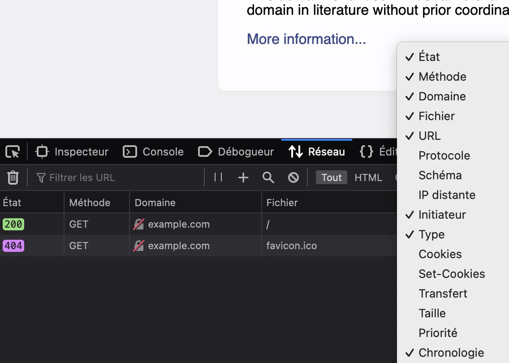
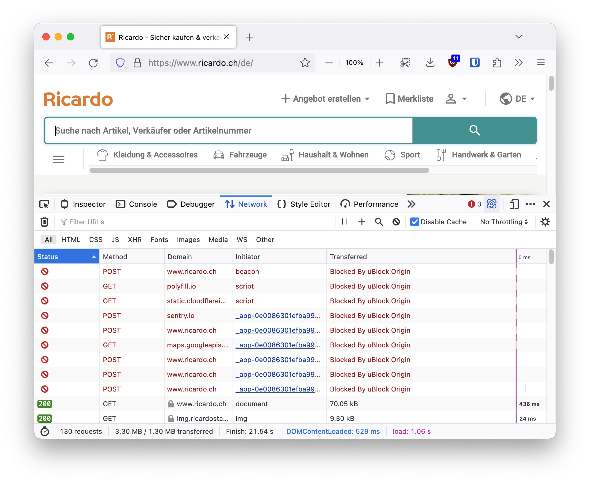

Suivi sur le web¶
Cela n’a pas pu vous échapper, le web moderne est rempli de “traqueurs”, de “publicité ciblée” et de “collecte de données”. Selon The Economist, en 2017, “La ressource la plus précieuse du monde n’est plus le pétrole, mais les données”, mais comment les données sont-elles collectées ? Comment fonctionne ce marché ? Quels sont les risques pour la vie privée ? Quelles sont les bonnes pratiques à adopter en matière de sécurité et vie privée sur le web ? Cette activité va vous guider pour comprendre le fonctionnement technique et économique de cette industrie, et quelles pratiques adoptées pour limiter les risques de sécurité et d’atteinte à la vie privée.
Notice
Thème :
Réseaux(transversal avecVie privée et surveillanceetÉconomie du numérique)Niveau :
moyenDurée : 4 périodes (1 séance de 45 minutes débranchées, 1 séance de 90 minutes branchée et une dernière séance de 45 minutes débranchées)
Objectifs pédagogiques : les objectifs de cette séquence sont associés à ceux du chapitre Réseaux, notamment
sécurité et sensibilisation aux bonnes pratiques; notions et modèles d’architectures et de protocoles. De plus, les objectifs transversaux d’enjeux sociaux sont visés notammentvie privée et surveillance; économie du numérique. Plus d’explications sont données dans la partie Considérations didactiquesModalité :
branchéetdébranchéMatériel : Ordinateur et navigateur web
Prérequis : Il est préférable d’avoir étudié les éléments du chapitre World Wide Wide. Cette activité le complète (éventuellement conclut) et lui apporte une activité pratique. L’activité Les enchères du Web ou équivalent sur le fonctionnement de la publicité ciblée est également requis pour comprendre la présence des acteurs et des enjeux (ceci pourrait s’intégrer dans une séance préliminaire débranchée)
Notions fondamentales : Les technologies du web et leur fonctionnement, l’Ad Tech et l’économie du web, les concepts et l’évaluation de vie privée du numérique, la compréhension d’une trace réseau, la modélisation d’une interaction sur le web avec l’association à des entités et leurs intérêts
Taille du groupe :
classe entièrepour les séquences débranchées etdemi-classepour les séquences branchées
Déroulement¶
Durée |
Phase de l’activité |
|
|---|---|---|
10 min |
Mise en situation (débranché) |
|
35 min |
Apprentissage - Institutionalisation (débranché) |
|
10 min |
Apprentissage (branché) |
|
20 min |
Application (branché) |
|
25 min |
Exploration (branché) |
|
35 min |
Objectivation et Évaluation (branché) |
|
10 min |
Institutionnalisation (débranché) |
|
10 min |
Institutionnalisation (débranché) |
|
20 min |
Apprentissage (débranché) |
|
5 min |
Réinvestissement (débranché) |
Étapes¶
Le suivi - l’affaire de tou·te·s¶
Durée : 10-15 min
Lors de cette étape introductive, l’idée est de captiver l’attention des élèves pour leur transmettre que s’intéresser au suivi sur le web concerne chacun et chacune. Il est possible que des élèves conçoivent le suivi comme un problème uniquement pour les personnes «ayant quelque chose à se reprocher», ou comme un simple moyen bénin et pratique d’avoir de la publicité plus pertinente : ces conceptions sont intéressantes mais insuffisantes à la compréhension des technologies de la publicité, ce qui est un bon prétexte pour en analyser le fonctionnement au niveau du réseau.
De nombreuses approches sont possibles, la proposition est de transmettre aux élèves l’une des histoires suivantes (via des slides, via un article à étudier, …) pour captiver leur attention. Ainsi, cette activité ne vous proposera pas une étude approfondie pour faire une “étude de cas” en classe, il s’agit simplement d’idées d’accroches (de plus, les articles source sont principalement en anglais). Plusieurs histoires sont proposées pour laisser la possibilité de trouver la plus pertinente dans le contexte des élèves de votre classe :
Avertissement
Certaines de ces histoires concernent des sujets pouvant heurter la sensibilité de certain·e·s. Il peut être pertinent de ne pas sélectionner une histoire si elle concerne trop directement l’un ou l’une des élèves (avortement, orientation sexuelle, cancer).
Merck traque les victimes de cancer et utilise la publicité ciblée de Twitter (lien) (
version PDF)“Comment Target a su que ma fille était enceinte avant elle” (lien) (
version PDF)Signal utilise les outils de publicité ciblée d’Instagram pour montrer aux utilisateur·trice·s ce que Meta sait d’eux/elles (lien) (
version PDF)L’application Ovia partage les données de maternité et menstruation de ses employées aux employeurs (lien)(
version PDF)Une newsletter Catholique découvre et révèle qu’un prêtre utilise l’application Grindr (réseau de rencontre gay) en ayant simplement acheté ses données auprès de “Data Brokers” (lien) (
version PDF)Des groupes “anti-choix” utilisent la technologie de la publicité ciblée pour montrer des publicités anti-avortement aux femmes durant leurs visites en clinique (lien) (
version PDF)
Interactions et ressources sur le web¶
Durée : 30-35 min
L’idée de cette séquence est d’ancrer les contenus étudiés à propos du web (par exemple via la partie World Wide Web de Modulo) avec des exemples concrets. Elle permet ainsi d’institutionnaliser des éléments discutés dans l’accroche, mais remplace difficilement une étude complète des technologies du web.
HTTP : transférer des documents hypertexte¶
Comme vu en cours, HTTP est le protocole qui permet de définir comment deux ordinateurs se demandent des fichiers hypertextes sur internet. Ouvrir une page web ne veut rien dire d’autre que générer une requête GET depuis votre navigateur (appelé client) vers un autre ordinateur (appelé serveur). Ce dernier vous répond généralement qu’il est d’accord (OK) et vous joint le fichier HTML correspondant. Tout ceci se passe automatiquement : une fois que vous cliquez sur un lien, l’ordinateur gère la mise en place du protocole pour vous. Les interactions autorisées par le protocole sont limitées, et seules les suivantes sont importantes pour cette séquence :
Méthode HTTP |
Usage |
|---|---|
|
Le client demande une information au serveur. Il peut éventuellement lui en transmettre au passage (les URL avec un |
|
Le client donne des informations au serveur. |
HTML : le format de fichier hypertexte¶
HTML est le format de base des fichiers échangés sur le web. Ce simple fichier texte est “Hyper” notamment car il a pour essence de créer des liens avec d’autres documents, on les appelle les hyperliens et c’est ainsi que que fonctionne le web ! Sur un moteur de recherche, vous faites une requête et recevez une page qui contient une liste de liens vers d’autres pages. C’est ce qui permet de “naviguer” sur le web d’une page à l’autre.

Fig. 24 Résultat d’une recherche sur le web : une liste d’hyperliens¶
{kind=link}
Fig. 25 Code source de la page HTML des résultats de DuckDuckGo (Lite) : une balise <a> symbolise un lien vers une nouvelle page¶
Il existe différents types de ressources vers lesquelles peuvent pointer les hyperliens. Les plus connues et répandues sont généralement les liens vers d’autres pages (comme dans la page d’une recherche web), mais les images, les feuilles de styles ou les scripts sont aussi des ressources qui sont en permanence référencées par nos pages web !
Important
Traditionnellement, les pages web référencées ne sont chargées que lorsque l’on clique dessus, c’est l’utlisateur·trice qui décide quand télécharger la nouvelle ressource. Les images, scripts et feuilles de style sont quant à eux chargés automatiquement ! L’utilisateur·trice n’a la plupart du temps pas conscience du moment où sont chargées ces ressources et d’où elles proviennent. C’est un concept clé pour la suite !
Les liens référençant des ressources peuvent pointer sur des ressources internes (des images par exemple) stockées dans le même dossier que la page web (comme dans l’exemple donné dans le cours HTML), ou vers des ressources tierces localisées n’importe où ailleurs.
Micro-activité
Vous pouvez télécharger les deux fichiers d’exemple code/example.html et code/example_bootstrap.html. Ces fichiers très simples rappellent les bases de HTML avec le concept de balise.
Il est ensuite possible d’identifier avec les élèves les différences entre le code source des deux fichiers. Les lignes 9-11 du fichier example_bootstrap.html sont effectivement des balises spéciales qui servent de références à des scripts tierces. Ces derniers sont chargés automatiquement et permettent d’améliorer l’apparence de ma page web grâce à des ressources tierce (sans avoir à coder soi même).
<html>
<body>
<h1 style="color:red"> L’amanite tue-mouche </h1>
<p> L’amanite tue-mouche est très belle mais très dangereuse ! </p>
<img src="photo.jpg" height="250" />
</body>
</html>
<html>
<body>
<h1 style="color:red"> L’amanite tue-mouche </h1>
<p> L’amanite tue-mouche est très belle mais très dangereuse ! </p>
<img src="https://upload.wikimedia.org/wikipedia/commons/0/03/Fly_Agaric_mushroom_04.jpg" height="250" />
</body>
</html>
Micro-activité
La première page HTML contient tandis que la seconde contient une . En effet, l’une de ces page charge hébergé .
Micro-activité
Notre navigateur chargera la ressource tierce et pour ce faire, il
Théorie - trace réseau¶
Durée : 10-15 min
Cette étape se veut être une étape d’introduction de TP avec les élèves : l’idée est de les accompagner avec l’outil d’analyse du réseau de leur navigateur et leur permettre de progressivement et en autonomie croissante, pouvoir effectuer les exercices demandés. Une phase introductive frontale et guidée peut être une bonne idée pour s’assurer d’initialement avoir l’attention de toutes et tous et éviter d’avoir des élèves perdus.
Important
Les élèves seront amenés à naviguer par eux/elles-mêmes. Ceci est grandement encouragé mais il est important d’appuyer qu’il sera difficile de comprendre tout le trafic observé sur n’importe quel site web (même pour l’enseignant·e) ! Expert·e des technologies web est un métier, et même les personnes expertes sont spécialisées dans un domaine : tout comprendre du web est aujourd’hui presque utopique !
Toutefois, il faut absolument valoriser et expliquer que les critères de réussite de la tâche ne se mesureront pas en “combien de % des requêtes je suis capable de comprendre” mais “suis-je capable d’expliquer le contenu et la nature de certaines requêtes ? Comment puis-je les justifier dans leur contexte ? Suis-je capable d’expliquer une requête particulière sélectionnée volontairement par mon enseignant·e ?” (c’est ce qui rend la tâche intéressante, authentique et l’éloigne d’une forme d’évaluation mesure 😉). Voir Considérations didactiques
Il existe de nombreux moyens d’observer une trace réseau, et à différents niveaux de la couche OSI (applications de monitoring dans le routeur, application dans le système d’exploitation comme Wireshark ou tcpdump). Toutefois, pour cette proposition d’activité, nous utilisons l’outil intégré au navigateur car il est :
intégré : rien n’est à installer sur les ordinateurs du gymnase ou à la maison
lisible et axé sur les aspects du web et moins sur les informations de la couche OSI, ce qui permettra d’identifier plus clairement les acteurs
s’exporte en format HAR ce qui permet d’avoir un format unique malgré les différences de navigateur (et peut permettre de créer des traces à l’avance et les donner aux élèves pour diminuer l’incertitude par exemple en évaluation)
étant dans le navigateur, il est possible de toutefois voir les données transmises via HTTPs de manière déchiffrée (vu que le chiffrement se fait dans le navigateur)
Notez toutefois qu’au vu des objectifs pédagogiques visés, l’utilisation d’une autre application permettrait tout à fait de remplir les objectifs pédagogiques visés (voir Considérations didactiques).
Avertissement
L’activité est principalement développée en testant sur Firefox. Des tests légers de fonctionnalités sur les autres navigateurs ont été effectués à la conception, mais il pourrait être raisonnable et simplifier grandement la tâche de l’enseignant·e d’effectuer ce TP sur Firefox.
Micro-activité
Pour commencer à montrer aux élèves le fonctionnement de l’outil de capture, il est possible de leur proposer de se rendre sur <example.com>, et d’activer leurs outils de développement web.

Une fois ceci fait, il est possible de les emmener sur l’onglet “Réseau” où iels pourront recharger la page et voir la liste des requête réseau faîtes.

Afin de toutes et tous partir sur une base commune, il peut être pertinent de leur demander d’activer les mêmes en-têtes pour toute le monde en faisant un clic-droit sur la barre d’en-tête de l’onglet réseau : 
Un fois ceci fait, le prochain outil essentiel est la barre de filtre où les élèves peuvent ajouter de nombreux types de filtres qui seront utiles plus tard.
{kind=link}
Fig. 26 Vous pouvez également montrer la possibilité d’importer et d’exporter des traces réseau directement depuis la console réseau du navigateur. Ceci permettra aux élèves de vous envoyer des traces, sauvegarder leurs traces et les réutiliser, et vous permettra de créer des exercices hors-ligne.¶
Pratique - observation de trace réseau¶
Durée : 15-20 min
Lors de cette partie, l’objectif est de guider les élèves progressivement à travers l’analyse de traces générées par des interactions web de plus en plus complexes. Les élèves sont censés gagner en autonomie au cours de cette étape. Il est toujours essentiel de rappeler que le but n’est pas de tout comprendre au fur et à mesure que les interactions sont plus complexes, mais de pouvoir identifier des éléments clés.
Ainsi, il revient à l’enseignant·e de distinguer vers quels élèves intervenir pour expliquer des fondamentaux et vers quels élèves ne pas intervenir pour expliquer des détails de web moderne hors du sujet traité. Pour aider à cette distinction, l’étape suivante donne des idées de sites où l’interaction web permet de distinguer des éléments clés, et la nature de ces éléments à relever qui sont alignés avec les objectifs de la séquence.
Trace réseau et contenu web¶
Micro-activité
Demander aux élèves de se rendre sur un site web très simple, comme par exemple https://example.org dans un nouvel onglet. Le but est ici de les forcer à refaire la procédure d’ouverture des outils de développement web (et se rappeler que, comme l’indiquent les navigateurs, la page doit être rechargée).
Une fois ceci fait, les élèves doivent reporter les informations suivantes (quiz Moodle, quiz papier, …):
Choisir une requête parmi celles qui apparaissent à l’écran et compléter le tableau :
Nom de ressource |
Méthode HTTP |
Domaine contacté |
Protocole utilisé |
Pourquoi la requête est initiée |
Type de document reçu |
Intérêt de la requête |
|---|---|---|---|---|---|---|
… |
… |
… |
||||
/ |
GET |
example.com |
HTTPS |
Car la page a été rafraîchie |
HTML |
Cette requête permet d’obtenir le corps de la page web visualisée |
Notez les points suivants qui sont fondamentaux pour poursuivre la séquence :
le protocole peut être lu depuis la colonne URL (pas besoin d’activer la colonne protocole, elle ne fait que donner la précision si HTTP 1, 2 ou QUIC est utilisé)
la colonne
Initiateurde la console Réseau peut être difficile à lire (d’autant que la nature de son contenu n’est pas documentée). Remplir la colonne “Pourquoi la requête est initiée” demande aussi du jugement : nous venons de charger la page, il est normal que nous recevions un document HTML. La colonne initiator est toutefois intéressante lorsqu’elle précise qu’unscriptou qu’unefeuille de stylesont à l’origine d’une requête.il est important d’introduire la colonne “Intérêt de la requête” pour guider les élèves vers les bons questionnements vis à vis des traces et la remise en contexte telle que décrite par les objectifs de la séquence
Différents types de ressources¶
Micro-activité
Demander aux élèves de se rendre sur un site légèrement plus complexe mais toutefois chargeant principalement des ressources internes comme par exemple https://fr.wikipedia.org ou https://www.vd.ch. De nouveau, vérifier la bonne compréhension de la mise en place du moniteur de réseau.
Une fois ceci fait, il est possible de par exemple demander aux élèves de reporter les informations suivantes :
Nom de ressource |
Méthode HTTP |
Domaine contacté |
Protocole utilisé |
Pourquoi la requête est initiée |
Type de document reçu |
Intérêt de la requête |
|---|---|---|---|---|---|---|
… |
… |
… |
||||
Wikipédia Accueil_Principal |
GET |
fr.wikipedia.org |
HTTPS |
Car la page a été rafraîchie |
HTML |
Cette requête permet d’obtenir le corps de la page web visualisée |
wikipedia.png |
GET |
fr.wikipedia.org |
HTTPS |
Une image est intégrée dans le document principal (balise img) |
PNG |
La requête permet de charger une ressource référencée dans le document HTML principal |
load.php |
GET |
fr.wikipedia.org |
HTTPS |
Un script est inséré dans le document principal (balise script) |
Code JavaScript |
La requête permet de charger une ressource référencée dans le document HTML principal |
A noter que :
vous pouvez librement pré-remplir certaines lignes pour sélectionner précisément certaines ressources à étudier, communes pour tous les élèves
il est peut être difficile d’analyser en détail le script chargé. Une explication simple suffit à justifier de la compréhension de l’élève. Un script comme ressource interne permet souvent d’afficher le contenu de la page : éléments dynamiques et animations, adaptation aux différents écrans, …
Micro-activité
Un autre exercice intéressant peut être d’identifier des requêtes de type POST. Un bon exemple est la page d’accueil de Google : https://www.google.com/
Une fois ceci fait, il est possible de par exemple demander aux élèves de reporter les informations suivantes :
Nom de ressource |
Méthode HTTP |
Domaine contacté |
Protocole utilisé |
Pourquoi la requête est initiée |
Type de document reçu |
Intérêt de la requête |
|---|---|---|---|---|---|---|
… |
… |
… |
||||
- |
POST |
www.google.com |
HTTPS |
C’est un script qui la déclenche (Firefox indique (beacon)) |
- |
Cette requête permet de donner des informations sur notre navigateur et nous à Google |
A noter que :
il est attendu que les élèves aient du mal à identifier ce qui a lancé la requête : c’est un contexte où iels doivent utiliser leur jugement et identifier qu’iels n’ont rien fait d’autre que d’ouvrir la page, ainsi, seule une action automatique déclenchée par un script permet de générer cette action (dans un contexte où iels auraient lancé une recherche, la réponse serait différente)
le concept de beacon sera couvert plus tard dans la séance. Cette petite partie d’exercice attire l’attention des élève sur la présence des requêtes de type POST dans un contexte où iels n’ont pas effectué d’action la générant
Ressources internes et ressources tierces¶
Micro-activité
Demander aux élèves de se rendre sur un site légèrement plus complexe et axé sur le chargement de ressources pouvant être tierces comme par exemple https://code.org/helloworld. De nouveau, vérifier la bonne compréhension de la mise en place du moniteur de réseau.
Une fois ceci fait, il est possible de par exemple demander aux élèves de reporter les informations suivantes :
Nom de ressource |
Méthode HTTP |
Domaine contacté |
Protocole utilisé |
Pourquoi la requête est initiée |
Type de document reçu |
Intérêt de la requête |
|---|---|---|---|---|---|---|
… |
… |
… |
||||
favicon.ico?0.0035782818514278336= |
GET |
facebook.com |
HTTPS |
Une balise d’image charge cette ressource |
SVG |
La page contient une icône Facebook en bas, celle-ci est téléchargée auprès de Facebook |
async-api.e9f77430-1.237.1.min.js |
GET |
js-agent.newrelic.com |
HTTPS |
Un script a chargé cette ressource automatiquement |
Code JavaScript |
Cette requête permet de télécharger du code JavaScript auprès d’un fournisseur de contenu externe. Son intérêt spécifique est dûr à analyser |
A noter que :
dire que la fonction d’un script est dure à analyser est une réponse valide (même si elle donne peu d’information, il est important de discerner entre l’analysable et le non analysable). Comme précédemment, les élèves doivent juste pouvoir décrire les fonctions habituelles standard d’un script (pour le différencier d’une image ou d’un document)
le site chargeant beaucoup de ressources, il devient essentiel d’indiquer clairement aux élèves comment se servir de la barre de filtre pour identifier une ressource, et quelles ressources cibler. Il est possible de faire varier les attributs ciblés pour tester la compréhension des élèves : “identifiez la ressource chargée auprès de Facebook”, “identifiez les requêtes POST” ou “identifiez les ressources de type feuille de style” permettent d’identifier des compétences de discrimination et de ciblage variées chez les élèves. Les élèves moins à l’aise avec la barre de filtre peuvent aussi cliquer sur l’entête d’une colonne pour trier selon les valeurs de cette dernière.
(optionnel) Chargement sécurisé et non-sécurisé¶
Aller plus loin
Cette partie est classée comme “optionnelle” pour permettre une flexibilité vis à vis des élèves ayant plus de difficultés avec les contenus précédents et y passer plus de temps. Cette partie s’intéresse spécifiquement aux connections sécurisées contre non-sécurisées. Cela peut être un bon appui pour un rebond lors de la discussion sur la confidentialité dans la partie Vie privée - propriétés et menaces, mais n’est pas forcément nécessaire pour comprendre les enjeux du suivi sur internet.
La plupart des navigateurs actuels sont très informatifs sur les implications d’une connection sécurisée, mais un test en condition peut être pertinent pour encadrer et institutionaliser cette situation.
Micro-activité
Afin de tester et identifier une connexion non sécurisée, le site web http://testphp.vulnweb.com/login.php propose une interface volontairement insécure. Il est important de rappeler aux élèves les implications d’une connexion non-sécurisée. La page de login permet de tester l’envoi d’un formulaire non-sécurisé (des identifiants par défauts sont disponibles et les seuls fonctionnels: username test, password test). Entrer ces informations et appuyer sur “login” permet d’obtenir une trace intéressante.
Une fois ceci fait, il est possible de par exemple demander aux élèves de reporter les informations suivantes :
Nom de ressource |
Méthode HTTP |
Domaine contacté |
Protocole utilisé |
Pourquoi la requête est initiée |
Type de document reçu |
Intérêt de la requête |
|---|---|---|---|---|---|---|
… |
… |
… |
||||
- |
POST |
testphp.vulnweb.com |
HTTP |
Un formulaire a été validé |
- |
L’utilisateur·trice doit donner son identifiant et mot de passe pour prouver son droit d’accès au compte |
A noter que :
il peut être pertinent d’étudier avec les élèves les différents types d’avertissements donnés par les navigateurs, et d’en discuter dans le contexte de la confidentialité (quels adversaire peuvent voir la ressource, comment peuvent-ils opérer, …)
cet exercice se prête bien à l’affichage avancé d’une ligne de la trace. Notamment en ce qui concerne la trace de POST request : un clic permet d’observer que la requête contient littéralement le mot de passe (si celui-ci n’est pas chiffré, il circule sur internet et peut être capturé par n’importe qui) (voir la Figure suivante)

Fig. 27 Voir le mot de passe dans l’analyse réseau d’une requête POST d’authentification sur un site web non sécurisé¶
Trace réseau et suivi - les traqueurs¶
Durée : 20-25 min
Une fois que les élèves sont familiarisé·e·s avec l’observation de trace réseau, iels remarqueront que les sites web modernes ont des traces réseau complexes, difficiles à déchiffrer et comprendre. C’est ainsi qu’il faudra familiariser les élèves avec le concept d’identification des traqueurs, pour distinguer les requêtes liées au contenu du site web, et celles qui ont un but de suivi (et plus tard, parler de leur intérêt économique), toujours dans l’objectif d’enrichir leur modélisation des interactions lors d’une communication réseau sur le web.
Différents types de traqueurs¶
Le premier moment clé de l’analyse de suivi ou non sur le web est l’identification de ce que sont les traqueurs. De nombreuses définitions existent : Ghostery, Wikipedia ou Mozilla proposent des définitions intéressantes et variées, qui mettent en avant différentes facettes du suivi.
Dans le cadre de cette séquence de TP, nous allons identifier différents types de traqueurs par leur méthode de fonctionnement et l’information qu’ils transmettent, afin de faire un pont entre l’identification de ces derniers dans une trace réseau, et les propriétés de la vie privée mises à mal. L’idée est alors de présenter aux élèves 3 types de traqueurs :
Type de traqueur |
Fonctionnement |
Information transmise |
Exemple |
|---|---|---|---|
Beacon ou Pixel espion ou Tag |
Une ressource (souvent externe) doit être chargée et, ce faisant, contacte un domaine. Le domaine contacté sait que nous sommes censés trouver la ressource sur une page web précise (peut ou pas être combiné avec les cookies) |
A quelle heure et avec quelle IP une ressource a été rencontrée |
Cet article de Proton explique le fonctionnement de leur mécanisme de protection des mails contre les beacons |
Fingerprinting |
Le navigateur reçoit du code JavaScript qui permet d’identifier des attributs précis et unique de votre navigateur et les envoie sur un domaine de suivi |
De nombreux attributs sont transmis, et ils permettent souvent d’identifier uniquement un navigateur (soit un·e utilisateur·trice) |
coveryourtracks.eff.org en montre un très bon exemple |
Cookie tierce |
Comme vu sous Interactions et ressources sur le web, les cookies sont des fichiers texte transmis automatiquement avec les requêtes HTTP. Sans contrôle de la part du navigateur, un site peut déposer et prendre les cookies des autres sites pour traquer un·e utilisateur·trice en lui attribuant un numéro unique par exemple |
Quel utilisateur·trice visite quels sites et quand |
La page wikipedia sur le sujet apporte un bon exemple |
Le choix de présentation de ces types de traqueurs est libre. Il est possible de s’axer sur la mise en exergue d’exemple, l’utilisation de slides ou d’un tableau de classification. L’idée est de permettre aux élèves de distinguer que différents types de traqueurs existent et emploient différentes méthodes : des plus ou moins complexes, permettant d’obtenir des informations plus ou moins précises (ce qui sera un rebond essentiel dans l’explication de la partie Vie privée - propriétés et menaces). Il est important aussi d’expliquer que la plupart de ces méthodes sont utilisées en combinaison pour assurer les chances de succès (la requête tente de transmettre des cookies si possible, sinon elle agit comme un simple beacon, par exemple).
À retenir
différentes méthodes de suivi existent, elles sont souvent utilisées en combinaison
il sera difficile d’identifier clairement à quelle catégorie de traqueur correspond un élément de trace réseau (et c’est normal, un script peut déclencher un beacon et tenter en même temps du fingerprinting et s’aider de cookies, la nuance est fine dans la réalité)
le but sera d’utiliser le jugement et la compréhension des élèves pour leur faire faire des suppositions sur la nature du traqueur (GET vers un site tierce : beacon, POST généré automatiquement par JavaScript : fingerprinting)
elles sont plus ou moins complexes et fournissent des informations différentes
elles ont globalement pour objectif d’identifier uniquement une personne navigant entre plusieurs pages (concept même de suivi)
Aller plus loin
Dépendant de l’aise des élèves dans le domaine, il est possible de mettre en avant le compromis entre la difficulté de bloquer le traqueur et la précision de l’information qu’il apporte : bloquer les beacons peut empêcher l’apparition de certaines images et la distinction entre traqueur et fournisseur de contenu est fine, cependant, ils apportent une quantité d’information limitée. Le fingerprinting est une solution intermédiaire (fingerprintjs, dans sa version payante, promet 99.5% de succès dans l’identification unique), et le cookie est la solution reine en quantité d’information pour l’identification unique mais est aisément bloqué par une politique “First Party Only” comme le Firefox Cookie Protection
Analyse complète d’interactions web¶
Durée : 35-40 min
Cette étape se veut être une forme d’objectivation de la tâche effectuée. L’idée est d’y dédier la majeure partie de la seconde période de TP pour :
mettre en avant les objectifs et critères de réussite attendu de la part des élèves sur la séquence (voir Considérations didactiques)
créer des ponts pertinents avec la théorie des cours en classe entière (notamment dû aux différences entre les demi-groupes qui peuvent être en avance ou en retard avec la théorie)
expliquer la forme que prendrait une tâche d’évaluation sommative liée à cette séquence (si ceci est effectivement prévu par l’enseignant·e)
permettre une phase d’évaluation formative autour de la tâche
Les formes d’évaluations sont libres et diverses. Un exercice de report d’informations sur des interactions avec des sites web permet une bonne évaluation de leur compréhension du système. Il est également possible d’imaginer demander des diagrammes d’interaction pour modéliser la présence des différents acteurs par exemple.
Afin de sélectionner un ou plusieurs sites pour créer cette séquences de report d’informations, une bonne source de sites web avec traqueurs de types indexés est la base de donnée de whotracks.me où vous pouvez créer une collection de sites à visiter pour les élèves, ou préparer des traces à l’avance.
Important
Une évaluation complète des critères de réussite de cette séquence requiert d’avoir couvert toute l’activité. Ainsi, dépendant de l’avancée des groupes de TP par rapport aux séances débranchées, il peut être pertinent d’utiliser ce temps et cette séquence formative comme une formation sur une sous-partie d’évaluation ou une évaluation complète. Suite à cela, il serait possible d’ajouter des colonnes comme “risques pour la vie privée” et “moyens de protection” pour permettre aux élèves d’exprimer un raisonnement le plus complet possible.
Vie privée - propriétés et menaces¶
Durée : 10-15 min
Lors de cette dernière partie de la séquence, l’idée est de créer des ponts entre les relations abstraites de haut-niveaux entre des individus/entreprises et les réalités des communications réseau sur le web. Ainsi, il est important d’amener brièvement ce que l’on appelle des propriétés de la vie privée : des éléments qui, lorsqu’ils sont manquants, peuvent être utilisés dans des contextes intrusifs contre des individus (rappel des histoires de l’accroche).
Propriété |
Définition |
Cherche à protéger |
Ne permet pas de protéger (entre autres) |
Comment l’atteindre |
|---|---|---|---|---|
Confidentialité |
le fait de ne permettre qu’aux personnes souhaitées d’accéder à une information |
des données (mots de passe, codes de carte bleu) |
le contexte autour de ces informations (savoir qu’une information existe par exemple) |
Chiffrement |
Pseudonymité |
le fait de remplacer un identifiant par un autre (un nom de famille par un pseudo par exemple) |
un nom en particulier |
l’association entre un pseudo et différentes actions d’une même personne (sous couvert du même pseudo sur 2 forums, il est possible d’associer nos messages postés à la même personne) |
Remplacer les noms par des alternatives |
Anonymité |
le fait de rendre indistingables différent·e·s utilisateur·trice·s : il pourrait s’agir à chaque fois de la même personne ou de personnes toutes différentes, aucune information disponible ne permet de distinguer |
l’identité des utilisteur·trice·s (protéger leur réelle identité et pouvoir en adopter de nouvelles vis à vis de différents acteurs) |
la déniabilité, la possibilité de rendre indistingable le fait d’avoir fait une action ou non |
Très complexe et dans beaucoup de cas, impossible sans supprimer des données (les Ressources complémentaires peuvent donner des exemples intuitifs) |
Ces propriétés permettent d’encadrer en partie ce qu’est la vie privée d’un point de vue plus formel. Dans chacune des histoires de l’accroche, il existe un problème car les individus concernés s’attendent à une forme d’anonymité sur internet vis à vis de certains acteurs (leur entreprise, le public, les groupes “anti-choix”, leur réseau social …). Il est alors pertinent d’utiliser cette explication en parallèle d’un rappel de l’accroche choisie pour le cours.
À retenir
il existe différents aspects de la vie privée qu’il est intéressant de protéger
la vie privée s’évalue toujours par rapport à un “adversaire”, une entité définie dans notre système d’interaction (le service de publicité ciblée, le fournisseur de service, le réseau, l’État, …)
la pseudonymité est la plupart du temps la seule propriété qu’il est facile d’obtenir sur le web
l’anonymité est une propriété très puissante, loin d’être applicable et encore moins dans le contenu du suivi sur le web
les technologie du suivi sur le web ont toutes un dénominateur commun : identifier le plus précisément possible les utilisateur·trice·s. Cependant cela est précisément l’encontre de l’anonymité et peut avoir des répercussions néfastes si ce n’est pas contrôlé
Réponse
Cette réponse est bien entendu à nuancer et n’est pas si noire ou blanche avec aussi peu de précisions. Intuitivement :
il ne manque pas de confidentialité car il est désiré de la part des journaux que Google ait accès au contenu visité par l’utilisateur·trice. La question se pose du consentement de ce·tte dernier·ère : on consent ou pas aux cookies, pas aux communication avec les services d’analyse. Comme toujours, la réponse varie selon la considération de “qui se protège de quel adversaire”
on peut espérer de la pseudonymité pourvu que nous n’ayons transmis notre nom réel ni à Google, ni à la Tribune de Genève ni a Suisse Info. Dans le cas contraire, cette propriété serait en péril
nous n’avons clairement pas d’anonymité : un acteur commun rassemble nos informations de navigations sur ces deux sites différents et peut lier notre identité et nos actions dans ces deux contextes
De nouveau, l’intérêt de cette discussion est d’amener la complexité de ces propriétés et à quel point “elles n’ont de sens” que dans un contexte définit : que protège-t-on précisément ? De qui le protège-t-on ? Sur quelle(s) interaction(s) ?
Trace réseau et suivi - commerce du web¶
Durée : 5-10 min
Cette partie fait office de rappel et de pont avec la première année du chapitre d’économie du numérique. Dans l’idéal, les élèves devraient pouvoir se rappeler de l’activité Les enchères du Web pour aborder cette partie. En effet, l’idée est de transmettre aux élèves la compréhension des relations économiques des acteurs autour de l’industrie de la publicité.
Bien qu’elle ne suffise pas comme support d’enseignement, la Fig. 28 illustre le fonctionnement des technologie de la publicité pour l’un des sites web visité dans les exemples. Elle met notamment en avant les relations économiques entre le fournisseur de service (20 minutes), le service d’analyse (Google Analytics), le vendeur de produit (par exemple une marque de chaussures) et le service fournissant la publicité (Google Ads).

Fig. 28 Illustration schématique du fonctionnement des technologies de la publicité ciblée¶
Protection de la vie privée¶
Durée : 15-20 min
La question maintenant évidente est “que faire, si l’on ne veut pas mettre en péril notre vie privée” ? Comment faire pour ne pas tomber dans un monde où la surveillance rapporte tellement que des compagnies privées connaissent et monétisent à qui veut l’acheter nos secrets et l’analyse de notre vie et de notre personnalité ? Évidement, une telle question n’a pas de réponse simple, et les deux approches suivantes ont pour but de montrer aux élèves des pistes pour se protéger, et même pour leur futur, faire des choix plus éthiques en ce qui concerne ce marché.
Des outils pour se protéger¶
Comme vu dans la partie Vie privée - propriétés et menaces, se protéger fait toujours écho aux questions “de qui ?” et “de quoi ?”. Ainsi, pour répondre aux situations et risques ayant été soulevés, l’idée sera de chercher des solutions pour se protéger des entreprises de suivi : les services d’analyse et les services de publicité ciblée. L’idée est de protéger son anonymat autant que possible, c’est à dire limiter le suivi possible de l’unicité de notre personne lors de la navigation. Plusieurs approches et solutions sont envisageables, notamment les suivantes sont intéressantes à mentionner auprès des élèves.
Le navigateur
Comme vu lors de la séance de TP, le navigateur est la porte d’entrée de la majorité de nos communications web, c’est donc clairement l’élément le plus crucial à protéger. Choisir un navigateur respectueux de la vie privée est nécessaire pour espérer avoir une vie privée sur le web. Un navigateur respecte la vie privée lorsqu’il permet de mettre en place simplement des mécanismes limitant le suivi : le Total Cookie Protection ou la protection contre le fingerprinting de Firefox en sont des exemples
Il existe de nombreux choix, les plus accessibles et de meilleure qualité sont sans doutes Brave et LibreWolf, respectivement basés sur Chromium et Firefox. Le site web PrivacyTests.org fournit très régulièrement des tests très complets comparant les navigateurs sur différents critères d’implémentations de ces technologies limitant les mécanismes de suivi.
Un point qu’il peut être important d’appuyer est que Google Chrome est le navigateur le moins respectueux de la vie privée : et oui, étant donné que la publicité ciblée est le principal revenu de la société Alphabet, bloquer ces dernières est impensable.
Les extensions du navigateur
La configuration par défaut de la plupart des navigateurs ne permet pas une protection contre toutes les stratégie de tracking. Ainsi, une extension peut permettre d’améliorer la sécurité générale mais aussi aider à préserver la vie privée lors de la navigation.
Il est possible de présenter aux élèves des extensions reconnues et efficace comme uBlock Origin, Ghostery ou Privacy Badger. Notamment, ces extensions ont l’avantage précieux d’être open-source ce qui limite les risques d’avoir un logiciel espion mal intentionné ayant accès à notre navigateur.
Il serait même par exemple pertinent de montrer sur votre propre ordinateur un “avant-après” pour attester de l’efficacité des extensions comme peut le montrer la capture d’écran suivante, en lien avec les communications faites et vues en TP.

Les VPN
Au vu du martèlement marketing autour de ce produit, les élèves auront sans doutes entendu parlé de VPN personnels. Il peut être intéressant d’en expliquer les avantages et inconvénients :
✅ l’idée est de remplacer votre adresse IP par celle d’un de leur serveur, les beacons ne seront pas capables de vous identifier par ce biais
❌ vos cookies et votre empreinte numérique peuvent eux être transmis sans soucis : cela opère à une couche applicative, et pas une couche IP
de même, si vous utilisez un compte (compte google ou YouTube), vos données sont sauvegardées dans ce compte, cela peut sembler bête mais important de rappeler conceptuellement
❌ si les beacons ne sont plus informés du lien entre votre adresse IP et votre navigation, c’est car c’est à présent le service de VPN qui en est informé, c’est une question de confiance : avez-vous confiance en une entreprise d’analyse web ou en une entreprise de VPN. Il est important de se former une opinion sur le service (et l’entreprise le soutenant) de VPN que l’on veut utiliser pour faire un choix éclairé, il n’y a pas de protection magique avec ce genre de service.
Des moyens plus respectueux d’utiliser la publicité¶
Suite à cette discussion, les élèves peuvent éventuellement poser la question de la rupture de la boucle économique décrite dans Trace réseau et suivi - commerce du web dans le cas où les pubs seraient bloquées, et à juste titre. Chaque année, le marché de la publicité ciblée rapporte plus d’une centaine de milliards de dollars à Google par exemple. Il semble donc clair qu’aucune entreprise ne veut se passer de ce marché et ces revenus. C’est pourquoi il peut être judicieux de parler aux élèves en tant que futurs citoyen·ne·s et potentiellement futur·e·s analystes de trafic web : il existe des moyens d’avoir des informations et de la publicité utiles sans s’introduire à ce point dans la vie privée :
Plausible est une alternative open-source à Google analytics qui permet d’analyser le trafic de ses sites web de façon plus légère, axée sur la vie privée et sur des infrastructures européennes
Matomo est une alternative également comparable, notamment prisée pour sa capacité à être déployée “on-premise”, et donc éviter des communications tierces mais toujours garder les données chez la même entité
Qwant propose un modèle publicitaire axé sur un suivi limité et un ciblage respectueux de la vie privée, c’est même ce qu’ils promeuvent auprès des annonceurs
À retenir
le choix de navigateur est crucial, c’est la porte d’entrée du suivi sur le web, si elle ne permet pas de limiter le suivi il sera impossible d’avoir une vie privée
les extensions sont efficaces pour limiter le trafic vers des sites non désirables. Elles sont nombreuses et il est préférable d’en choisir des reconnues et recommandées
pour se protéger, il faut faire des choix à différents niveaux (réseau, application) et utiliser des technologies qui limitent les capacités des technologies de tracking :
limite du fingerprinting en limitant les capacités de JavaScript ou les capacités des communication avec les sites recevant l’empreinte numérique, éventuellement à l’aide d’une extension
limite des beacon en cachant son adresse IP ou empêchant la communication avec les services connus de beacon comme Google Tag Manager, éventuellement à l’aide d’une extension.
Les élèves doivent comprendre le fonctionnement des technologies de tracking pour expliquer ce qui permet de les bloquer
les VPN ne permettent pas une protection mais un changement d’entité capable d’analyser notre trafic. C’est notre niveau de confiance qui déterminera la sécurité ou non
il existe une boucle économique respectueuse de la vie privée tout en permettant d’analyser le trafic et promouvoir ses produits sur le web
Suivi et applications mobiles¶
Durée : 5-10 min
Cette dernière étape est un réinvestissement qui permet d’élargir les compétences acquises lors de la séquence pour les appliquer à un autre domaine. De nombreuses applications sont possibles, notamment vis à vis de rebonds avec l’accroche. La proposition est d’ici parler brièvement des applications mobiles, et analyser que, même si ce n’est pas dans un navigateur, la même boucle économique est en fonctionnement (avec l’ajout intéressant de la commission sur les transactions in-app comme le fait Apple par exemple).
Le temps étant limité, il est possible d’aborder le sujet sous différents angles, mais il semble intéressant de travailler avec les élèves sur la compréhension des politiques en matières de vie privée des applications. Les stores Apple et Android indiquent aujourd’hui avec plus de précision le traitement des données et l’utilisation des périphériques faites par les apps. Par exemple dans la Fig. 29, on peut voir un certain nombre de données permettant d’établir un lien avec l’identité de l’utilisateur·trice. Quelques questions peuvent guider une discussion :
comment peut-on suivre quelqu’un avec une seule application ?
pourquoi toutes ces données sont-elles collectées dans le cas d’instagram ?
quelle est la position d’instagram dans la boucle économique de la publicité ciblée ?
comment protéger sa vie privée en utilisant instagram ?
(Ces questions sont tout à fait ouvertes et peuvent être guidées par les interactions avec les élèves ou des points spécifiques qu’il est utile d’appuyer en réponse à d’autres parties du cours ou même d’autres disciplines)

Fig. 29 Description de l’utilisation des données par l’application Instagram dans l’Apple Store¶
Idéalement, l’enseignant·e s’assure que la discussion puisse mettre en valeur les compétences acquises lors de la séquences :
il est possible de suivre avec une seule application de nombreuses façons : navigateur intégré, partage vers d’autres applications (messagerie), dans le cas de Meta, les données peuvent être regroupées avec celles de WhatsApp et Facebook. Certaines technologies de suivi sont identiques (fingerprinting, beacon, cookies), mais il y en a également des propres aux applications mobiles (suivi inter-application, numéro d’identifiant unique d’appareil, notifications push)
ces données sont collectées dans le but de créer un profil publicitaire pour la publicités ciblée car
Meta est à la fois fournisseur de service, fournisseur de publicité et s’occupe via les applications d’être un service d’analyse. Autrement dit ils ont une position dans laquelle ils ne font que gagner de l’argent dans la boucle, d’où l’intérêt d’occuper toutes ces positions
c’est plus difficile ! Pas d’extension, pas de choix de navigateur, et l’application a accès à beaucoup plus de données qu’un navigateur d’ordinateur (données de santé par exemple). La capacité à se protéger dépend grandement des choix des développeur·euse·s de systèmes d’exploitation (IOS et Android) pour implémenter des mécanismes de protection
Considérations didactiques¶
Cette activité a été conçue dès le départ avec l’idée en tête d’en faire une activité axée sur l’alignement curriculaire autour du plan d’étude vaudois. Notamment, le but de cette tâche est de la créer en résonance d’une tâche d’évaluation sommative authentique, qui évalue des compétences cognitives élevées chez les élèves et s’inscrive dans une boucle de rétro-action avec l’enseignant·e pour aider et attester de l’acquisition de compétences.
Cette partie présente donc les objectifs identifiés du plan d’étude que la tâche cherche à faire atteindre, et les met en perspective avec des critères d’évaluation qui seraient applicables pour une évaluation sommative suivant cette séquence.
Référenciation restreinte du plan d’étude¶
Objectifs généraux¶
Objectifs généraux du cursus gymnasial en informatique
Compétence
Prendre des décisions fondées sur des connaissances techniques
Identifier et analyser quelques enjeux sociaux et politiques du numérique
Savoirs
Principes de communication de l’information
Modéliser et simuler
Savoir-Faire
Développer une réflexion autour des enjeux socio-politiques du numérique
Attitude
Esprit critique
Objectifs généraux de deuxième année en informatique
Réseaux : sécurité et sensibilisation aux bonnes pratiques; notions et modèles d’architectures et de protocoles
Enjeux de société : vie privée et surveillance; économie du numérique
Objectifs spécifiques¶
Applique
L’élève sait lancer, manipuler et utiliser un logiciel d’analyse de trafic réseau pour présenter des éléments d’une trace en les identifiant avec le vocabulaire adapté du réseau
Analyse
L’élève peut décrire et/ou schématiser sa représentation des processus en cours lors d’une communication réseau
L’élève peut développer une analyse d’une communication réseau en mettant en avant des risques pour la vie privée et la sécurité des communication en pointant sur des informations sensibles et peut classer ces éléments selon : la confidentialité, la pseudonimité, l’anonymat et la dissociabilité
L’élève peut déterminer les acteurs impliqués dans l’établissement d’une connexion réseau et identifier la position de chacun en ce qui concerne les risques de la vie privée et l’enjeux économique
Évalue
L’élève peut évaluer si les besoins d’accès aux données/de communication d’une application sont justifiés ou non pour l’usage qu’il/elle en ferait et peut juger des mécanismes à mettre en place pour se protéger ou proposer des alternatives à rechercher
Tâche d’évaluation sommative¶
Critères obligatoires (nécessaires pour avoir 4)¶
Technique et application
L’élève est capable d’ouvrir un outil de capture de réseau (e.g. outil de capture d’un navigateur, Wireshark, tcpdump,…). Iel connaît la manipulation nécessaire et peut, au besoin, s’aider de recherches autonomes sur le web (en validant un acquis du vocabulaire lié au réseau) mais sans l’aide externe de l’enseignant·e
L’élève peut naviguer sur différents site web en capturant et identifiant les différentes communications réseaux faites par son navigateur via : leur destination, le contenu de leurs cookies, ou d’autres attributs utiles pour évaluer la pertinence économique et de tracking de cette communication
Analyse de communication : vie privée et économie
En observant une trace réseau, l’élève peut identifier des processus en cours et modéliser (par description ou schématiquement) le système sous-jacent avec ses acteurs et leurs interactions
L’élève peut se rendre sur un site donné au préalable et identifier une potentielle menace de la vie privée qu’iel déterminera en sélectionnant avec pertinence des informations provenant d’une trace réseau
L’élève peut justifier en quoi une menace de la vie privée concerne plus ou moins les domaines de la confidentialité, la pseudonimité, l’anonymat et/ou la dissociabilité
L’élève peut consulter une trace réseau donnée et identifier des acteurs économiques en jeux dans la communication parmi le fournisseur de service, le service d’analyse, l’intermédiaire publicitaire, le revendeur de produit et le client et fournir une explication du fonctionnement du financement en lien avec la trace observée
Sécurité et bonnes pratiques
Étant donnée des risques pour la vie privée identifiés à partir d’une trace réseau, l’élève peut déterminer un type d’outil permettant d’éliminer un risque et justifier de la capacité de l’outil à faire cela
Critères de perfectionnement¶
Pour chacun des critères obligatoires, l’élève est capable de fournir le travail pour plusieurs traces réseaux ayant chacune des caractéristiques différentes (sites différents, menaces différentes, acteurs variés ou centralisés, …)
Liens avec les autres thématiques¶
Économie du numérique¶
L’activité “Enchère du numérique” est clairement en lien puisque expliquant le fonctionnement et les acteurs de la publicité en ligne. Elle met notamment en avant la raison économique motivant la collecte de données pour permettre de faire des publicités plus ciblées et donc plus efficaces économiquement
Surveillance et vie privée¶
Toute l’activité, dès son accroche, fait écho aux discussions de ce chapitre, notamment le débat sur “Rien à cacher ?”, et approfondit l’explication concrète des “Traces numériques”
Numérique et environnement¶
Comme mentionné dans le dossier, l’impact environnemental de la publicité ciblée est non négligeable ! Comme vu avec la base de données de la partie Trace réseau et suivi - les traqueurs, il est possible de voir la quantité du trafic (en MB et en pourcentage de contenu chargé par la page) dédiée au suivi et à la publicité ciblée.
De même, dans la partie Protection de la vie privée, les extensions discutées fournissent pour la plupart des rapports sur le nombre de publicités ciblées bloquées, et éventuellement le temps de chargement économisé ou la taille des fichiers non-téléchargés. Cela peut aider à se rendre compte de l’impact en taille et temps informatique de la publicité ciblée
Réseau : interopérabilité¶
Dans la partie Protection de la vie privée, il est mentionné que la protection de la vie privée doit passer par des technologies agissant à différents niveaux de la couche OSI et que notamment, les cookies et le VPN agissent à différents niveaux. En effet, il est pertinent de mentionner que la sécurité en général doit être considérée aux différents niveaux de couches, créant des liens intéressants avec la partie réseaux
Ressources complémentaires¶
L’anonymat : une propriété utopique¶
Le youtubeur Micode montre comment il fait pour joindre des informations pour retrouver des informations sur quelqu’un à partir d’une photo : un bon exemple de la complexité d’être anonyme sur internet - https://www.youtube.com/watch?v=udYtHVEwbYA
Le youtubeur Great Review raconte l’histoire de l’oeuvre “He will not divide us” et son lien avec le forum 4Chan qui a utilisé des données publiques pour retrouver l’oeuvre d’art à travers le monde : de nouveau, il est dur d’être anonyme sur internet - https://www.youtube.com/watch?v=jDU1uywsoaM
Le suivi sur internet¶
Un blogpost de l’entreprise SurfShark pour expliquer leur protocole de mesure de la présence de traqueurs sur un ensemble de site web populaires - https://surfshark.com/whos-tracking-you
Un article de la BBC décrivant comment cliquer sur un lien depuis Google informe des tierces - https://www.bbc.com/news/technology-49593830
Une petite BD résumant le fonctionnement du suivi sur le web - https://www.freecodecamp.org/news/what-you-should-know-about-web-tracking-and-how-it-affects-your-online-privacy-42935355525/
Le fingerprinting¶
Tester son empreinte numérique - https://www.amiunique.org/ ou https://coveryourtracks.eff.org/
Tester le fonctionnement de l’empreinte numérique, moyen d’identification unique sans cookies - https://nothingprivate.gkr.pw/ et leur code source https://github.com/gautamkrishnar/nothing-private
Comment traquer les traqueurs¶
Une fois les différents types de traqueurs analysés, l’objectif est de pouvoir les identifier dans la communication avec un site web et permettre aux élèves de faire le lien entre les technologies de tracking enseignées aux élèves et la réalité des communications réseau sous-jacente.
Afin de permettre aux élèves d’avoir les outils nécessaires pour comprendre les interactions entre client, fournisseur de service et traqueur, il semble important de leur donner accès à une base de donnée indexée et répertoriant des traqueurs de sites web connus afin de guider leur recherche. Les sites whotracks.me et trackography.org fournissent une base de données et des visualisation intéressantes permettant aux élèves de naviguer en autonomie et utiliser leur jugement pour identifier les traqueurs dans une trace réseau.
Anecdote
Le site web de whotracks.me utilise des données open-source et leur repo GitHub indique comment construire leur site en local. Il pourrait être envisageable, dans le cadre du cours, d’avoir une version locale du site pour la personnaliser.
Micro-activité
Demander aux élèves de se rendre sur le site whotracks.me, et d’utiliser la barre de recherche pour trouver le site “ricardo.ch”. En bas de cette page, les élèves trouveront les traqueurs qu’iels peuvent s’attendre à voir et, en cliquant dessus il est possible d’obtenir quelques informations au sujet des entreprises de tracking concernées.
Les élèves peuvent maintenant se rendre sur le site web ricardo.ch et ouvrir leurs outils d’analyse du réseau. A l’aide de la base de données de traqueurs, il est possible de demander aux élèves d’identifier des connexions liées aux 10 traqueurs annoncés comme les plus présents sur le site d’après la base de données. Il est ensuite possible de leur demander de reporter les informations suivantes (notez l’addition d’une nouvelle colonne à droite) :
Nom de ressource
Méthode HTTP
Domaine contacté
Protocole utilisé
Pourquoi la requête est initiée
Type de document reçu
Intérêt de la requête
Technologie de tracking potentielle (et pourquoi)
…
…
…
gtm.js
GET
googletagmanager.com
HTTPS
Du code javascript a généré cette requête
-
Ricardo.ch utilise les services de Google Tag Manager pour analyser le trafic sur son site web
On suppose un beacon car il s’agit d’un “service de tag” (c’est dans le nom)
map.js
GET
maps.google.com
HTTPS
Du code javascript a généré cette requête
Code JavaScript
Ricardo.ch utilise les services de Google Maps pour permettre d’identifier la position de l’utilisateur·trice
On suppose un beacon : Google est informé de notre visite sur Ricardo.ch via cette requête
-
POST
sentry.io
HTTPS
Du code javascript a généré cette requête
-
Ricardo.ch utilise les services de Sentry.Io pour analyser la qualité de service de leurs clients
On suppose du fingerprinting car une requête POST a donné des informations sans que nous n’interagissions avec le site
A noter que :
il n’est pas attendu que les élèves comprennent le fonctionnement de chaque entreprise de tracking, mais identifient des moyens et méthodes et les associent à des technologies de tracking (ce qui permettra notamment de les associer à des risques pour la vie privée)
plusieurs réponses sont possibles pour un même traqueur, l’important est d’évaluer la qualité du jugement de l’élève vis à vis des objectifs
l’enseignant·e est libre de donner des contraintes : “trouvez quelque chose qui ressemble à du fingerprinting et expliquez pourquoi vous pensez cela” ou “quelle entreprise semble avoir une présence dominante sur le tracking de ce site” pour guider la recherche de traqueurs
il est bien sûr plus intéressant de chercher des rétroactions auprès des élèves pour permettre de guider leur actions pour résoudre leurs difficultés, cela peut se faire de manière assez fluide en pré-remplissant certaines colonnes de ce tableau et travaillant spécifiquement sur les autres
Une fois cet exercice complété, il est possible et intéressant de le réitérer avec un ou plusieurs sites différents (par exemple 20minutes.ch ou tout autre site de news qui sont de bonnes sources de tracking).
Aller plus loin
En se rendant sur la carte interactive de Trackography.org, il est possible d’observer un résumé des interactions du tracking sur une carte du monde.
Par exemple, ce lien vous montre directement le suivi (dans son aspect d’identification et d’association à votre navigation) entre les sites de news SwissInfo.ch et tdg.ch. Cette infographie montre notamment que c’est aux états-unis que vos données pour le tracking sont envoyées, même en se rendant sur deux sites d’informations suisse !